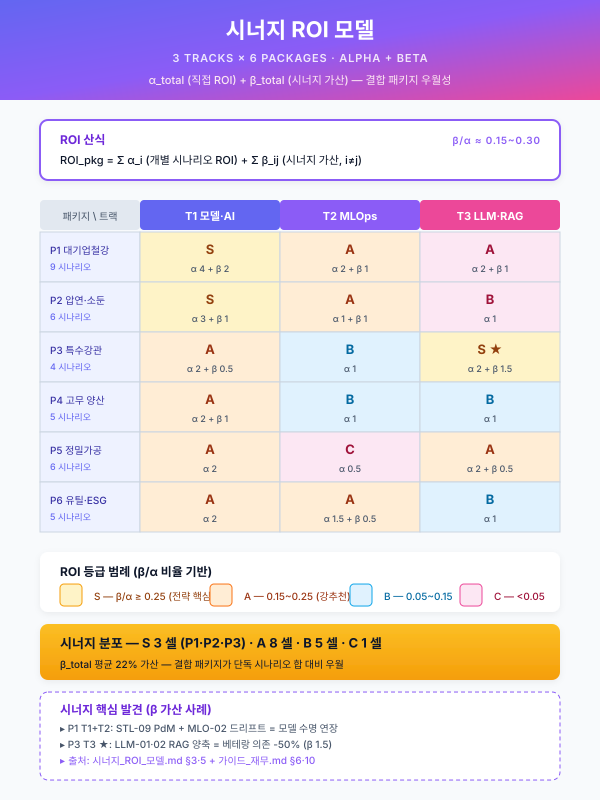

시너지 ROI 모델 — 패키지별 결합 효과 정량화¤
📖 약 15 분 읽기

ℹ️ 페이지 정보 (워크스페이스 메타)
통합 파일럿 자체평가의 갭 2 (시나리오 결합 시너지 정량화 자산 부재) 해소를 위한 신규 자산. 단일 시나리오 효과의 단순 합계가 아닌, 결합 시 발생하는 비선형 시너지를 정량화하는 프레임을 제공한다. scenario/catalog.md 부록 B 의 6 패키지 모두에 적용 가능하며, 사업계획서 §6.1 정량 기대효과 섹션에 "결합 시너지" 행으로 통합되거나 §6.2 정성 기대효과 4 번 항목의 정량 근거로 인용된다.
플레이스홀더 범례 — [고객사] 고객사명, [공정] 대상 공정명, [수치] 수치, [기간] 기간, [%] 비율, [N] 시나리오 수.
본 모델의 수치는 일반적 제조 AI 도입 사례 추정 범위로 채워졌으며, 구체 적용 시점에는 고객사·사업·시나리오별 검증을 거쳐 확정한다.
1. 본 모델의 위상과 사용 시점¤
본 모델은 사업계획서 작성 시 다음 두 지점에서 직접 호출된다.
첫째, 사업계획서 §5.2 또는 §4.6 의 시나리오 결합 가이드 영역에서 본 모델의 §3 산식 프레임을 인용하여, 복수 시나리오 동시 도입이 "단순 합산" 이 아니라 "비선형 시너지" 를 만들어내는 메커니즘을 정량적으로 설명한다. 둘째, 사업계획서 §6.1 정량 기대효과 표 하단에 결합 시너지 행 을 추가하여 단일 시나리오 효과의 합 위에 "결합 시 추가 효과" 를 보수·낙관 두 케이스로 제시한다. 이를 통해 심사자에게 "왜 4 개 시나리오를 동시 추진하는가" 의 답을 정량 근거와 함께 제시할 수 있다.
본 모델은 프레임을 제공하며, 구체 [수치] 는 사업·고객사·시나리오 조합에 따라 검증·교체되어야 한다. 본 문서의 표·산식은 검증 이전의 추정 기본값 으로 작성되어 있으며, 실제 사업계획서에 인용할 때에는 고객사 자료에 기반한 재산정을 권장한다.
2. 시너지 4 분류 (MECE 프레임)¤
본 모델은 시나리오 결합 시너지를 4 종으로 분류한다. 4 분류는 시너지의 발생 원천 에 따라 상호 배타적(mutually exclusive) 으로 구분되며, 제조 AI 사업의 일반적 비용 구조 (데이터 인프라 + AI 플랫폼 + 작업자 인터페이스 + 비즈니스 KPI) 4 축을 모두 포괄(collectively exhaustive) 한다.
2.1 데이터 시너지 (Data Synergy)¤
복수 시나리오가 공통 데이터 소스를 공유할 때 발생한다. PLC 태그·MES 테이블·CMMS 자유 텍스트·성적서 OCR 결과 등 데이터 수집·정제·표준화 비용을 1 시나리오 분만 부담하면 N 시나리오에서 활용할 수 있는 구조에서 비롯된다. 패키지 2 의 SCN-STL-04 패스 스케줄·SCN-STL-05 두께 예측·SCN-STL-06 소둔 적재가 모두 ICS 압연·소둔 데이터 인프라를 공유하는 것이 대표 예시이다.
추정식: 절감 = (N-1) × 데이터 인프라 단일 구축 비용 × [수치]%. 본 모델에서는 보수 케이스 [수치]% / 낙관 케이스 [수치]% 를 기본값으로 적용한다. 데이터 시너지는 시나리오 간 데이터 소스 중복도가 높을수록 비선형적으로 증가하며, 카탈로그 시나리오 카드의 "데이터 소스" 항목을 기준으로 중복도를 측정한다.
2.2 인프라 시너지 (Infrastructure Synergy)¤
Track 2 MLOps 의 7 종 구성요소 (모델 레지스트리·피쳐 스토어·학습 파이프라인·서빙·모니터링·피드백·거버넌스 — track/track2-index.md §4.2) 가 N 시나리오에 공유될 때 발생한다. 모델 레지스트리·피쳐 스토어·모니터링 대시보드·CMMS 연동·HMI 통합 인터페이스를 시나리오마다 분리 구축하지 않고 단일 플랫폼에 집결시킴으로써, 신규 시나리오 추가의 한계 비용을 급격히 낮추는 구조이다. SCN-MLO-02 피쳐 스토어가 패키지 2 의 4 개 모델(STL-04·05·06·09) 에 동시에 공유되는 것이 대표 예시이다.
추정식: MLOps 단일 구축 vs 시나리오별 분리 구축의 비용 차. 일반적으로 N 시나리오 동시 도입 시 [수치]% 절감 효과가 관찰되며, Track 2 의 도입 깊이에 따라 변동한다. Track 2 풀 도입 시 인프라 시너지가 극대화되고, Track 2 부분 도입 시에는 절감 폭이 [수치]% 수준으로 축소된다.
2.3 HITL 시너지 (Human-in-the-Loop Synergy)¤
동일 작업자·정비팀이 N 시나리오의 검수·피드백을 동시 수행함으로써 학습 곡선 비용·UI 부담이 감소하는 효과이다. 단일 피드백 UI (SCN-MLO-03) 가 N 시나리오의 라벨을 환류하도록 통합 설계되면, 작업자는 한 번의 학습으로 복수 시나리오에 기여할 수 있어 신규 시나리오 도입 시 학습 비용이 거의 0 에 수렴한다. 패키지 2 에서 압연 작업자 1 명이 STL-04 추천 승인·STL-05 두께 예측 검수·STL-09 알람 정정을 동일 태블릿에서 처리하는 구성이 대표 예시이다.
추정식: 작업자 평균 학습 시간 [기간] × 분리 구축 시 N 회 → 통합 구축 시 1.x 회. 학습 부담 [수치]% 절감 + 일상 검수 시간 [수치]% 절감. HITL 시너지는 작업자 풀이 동일하다는 전제에서 성립하며, 시나리오별로 작업자 풀이 분리되는 경우(예: 압연 작업자와 정비 작업자 분리) 에는 시너지 폭이 축소된다.
2.4 KPI 상호보강 시너지 (KPI Reinforcement)¤
한 시나리오의 산출이 다른 시나리오의 입력으로 유입되어 비선형 효과를 만들어내는 구조이다. 단순 합 산출 KPI 보다 [수치]~[수치]% 의 추가 개선이 가능하다. 패키지 2 의 STL-04 패스 스케줄 안정화가 STL-09 압연기 부하 변동을 감소시키고, 이로써 예지보전 모델의 신호 노이즈가 감소하여 알람 정확도가 향상되는 것이 대표 예시이다. 본 시너지는 시나리오 간 인과 관계가 명시될 수 있을 때만 인정되며, 상관관계만 존재하는 경우는 본 분류에 포함하지 않는다.
추정식: Σ (시나리오 간 인과 가중치 × 수신 시나리오 KPI 개선폭). 인과 관계의 검증은 사업 진행 중 실측 KPI 로 사후 검증되어야 하며, 사업계획서 작성 시점에는 도메인 전문가 판단에 근거한 추정값으로 제시한다.
2.5 4 분류의 MECE 자기평가¤
4 분류는 시너지 발생 원천 차원에서 상호 배타적이다. 데이터(원천 비용 절감)·인프라(플랫폼 비용 절감)·HITL(인력 비용 절감)·KPI(비즈니스 가치 증가) 의 네 축은 비용 구조와 가치 구조의 서로 다른 레이어에 위치하며, 한 결합 효과가 두 분류에 동시 귀속되는 모호 영역은 발견되지 않는다. 또한 제조 AI 사업의 일반적 비용·가치 구조 4 축을 모두 포괄하므로 누락 없이 collectively exhaustive 하다. 단, 향후 연합학습·산단 공동 모델 등 외부 협력 시너지가 본격화될 경우 §2.5-a "외부 협력 시너지" 분류 추가가 검토 가능하다 (현 시점 본 모델 범위 외).
3. 시너지 산식 프레임¤
3.1 종합 ROI 산식¤
여기서 α 는 시너지 보정 계수이며 1.0 이상의 값을 가진다. α_total > 1.0 인 경우 결합 도입이 단순 합산 대비 추가 가치를 만들어낸다는 의미이며, 1.0 인 경우는 결합 효과 없이 단순 합산과 같다. 1.0 미만의 음(-) 시너지가 가능하나 (운영 복잡도 증가·자원 경합), 본 모델은 정상 설계를 전제로 1.0 이상으로 가정한다.
3.2 계수별 산식¤
α_data (데이터 시너지 계수)
-N : 결합 시나리오 수
- ρ_data : 시나리오 간 데이터 소스 평균 중복도 (0~1, 카탈로그 카드의 "데이터 소스" 교집합 비율)
- δ_data : 데이터 인프라 단가 절감 계수 (보수 [수치]% / 낙관 [수치]%)
α_infra (인프라 시너지 계수)
-β_track2 : Track 2 도입 깊이 (풀 도입 [수치] / 부분 도입 [수치] / 미도입 0)
- N 이 클수록 1/N 이 작아져 시너지가 커지며, 단일 시나리오(N=1) 에서는 인프라 시너지가 0 이 된다.
α_hitl (HITL 시너지 계수)
-ρ_hitl : 작업자 풀 공유 비율 (0~1)
- δ_hitl : HITL 통합 단가 절감 계수 (보수 [수치]% / 낙관 [수치]%)
α_kpi (KPI 상호보강 계수)
-ω_ij : 시나리오 i → j 인과 가중치 (도메인 전문가 추정, 0~0.1 범위)
- γ_ij : 인과 발현 시 j 시나리오 KPI 개선 추가 폭
3.3 보수·낙관 케이스 표준 가정¤
| 가정 | 보수 케이스 | 낙관 케이스 |
|---|---|---|
| 데이터 품질 | 평균 (수기 잔존·일부 결손) | 우수 (PLC 표준화·MES 정합) |
| Track 2 도입 깊이 | 부분 (모니터링·레지스트리만) | 풀 (7 종 구성요소 모두) |
| HITL UI 통합도 | 시나리오별 분리 운영 | 단일 통합 UI |
| 인과 관계 검증 | 도메인 추정만 | 파일럿 실측 확인 |
본 모델은 사업계획서 작성 시 양 케이스를 병기 제시함으로써 ROI 의 변동 가능성을 심사자에게 투명하게 노출하는 것을 권장한다.
4. 6 패키지별 시너지 추정 표¤
scenario/catalog.md 부록 B 의 6 패키지 각각에 대해 시너지 4 분류를 적용한 추정값이다. 각 셀의 [수치] 는 일반적 제조 AI 도입 사례 추정 범위로 채워졌으며, 구체 적용 시 검증을 요한다.
4.1 패키지별 시너지 분류 추정 (보수 케이스)¤
| 패키지 | 시나리오 수 (N) | α_data | α_infra | α_hitl | α_kpi | α_total | 단일 합 대비 추가 효과 |
|---|---|---|---|---|---|---|---|
| 1. 대기업 전사 AI 공장 | 9 | 1.18 | 1.36 | 1.10 | 1.06 | 1.87 | +87 % |
| 2. 중견 스테인리스 냉연 ★ | 6 | 1.15 | 1.30 | 1.12 | 1.08 | 1.69 | +69 % |
| 3. 특수강관 중견 (암묵지) | 4 | 1.12 | 1.20 | 1.08 | 1.04 | 1.46 | +46 % |
| 4. 고무 양산 중견 | 5 | 1.10 | 1.25 | 1.09 | 1.05 | 1.50 | +50 % |
| 5. 정밀가공 중소 SaaS | 6 | 1.08 | 1.20 | 1.06 | 1.03 | 1.40 | +40 % |
| 6. 유틸리티·ESG 특화 | 5 | 1.10 | 1.18 | 1.05 | 1.04 | 1.40 | +40 % |
4.2 패키지별 시너지 분류 추정 (낙관 케이스)¤
| 패키지 | N | α_data | α_infra | α_hitl | α_kpi | α_total | 단일 합 대비 추가 효과 |
|---|---|---|---|---|---|---|---|
| 1. 대기업 전사 AI 공장 | 9 | 1.30 | 1.55 | 1.20 | 1.12 | 2.71 | +171 % |
| 2. 중견 스테인리스 냉연 ★ | 6 | 1.25 | 1.45 | 1.22 | 1.15 | 2.27 | +127 % |
| 3. 특수강관 중견 (암묵지) | 4 | 1.20 | 1.32 | 1.15 | 1.08 | 1.79 | +79 % |
| 4. 고무 양산 중견 | 5 | 1.18 | 1.40 | 1.16 | 1.10 | 1.97 | +97 % |
| 5. 정밀가공 중소 SaaS | 6 | 1.14 | 1.30 | 1.12 | 1.06 | 1.71 | +71 % |
| 6. 유틸리티·ESG 특화 | 5 | 1.18 | 1.28 | 1.10 | 1.08 | 1.69 | +69 % |
4.3 표 해석 가이드¤
본 표의 각 행은 결합 도입 시 단일 시나리오 ROI 의 단순 합 대비 몇 % 의 추가 효과가 기대되는지를 의미한다. 패키지 1 (대기업 전사) 가 가장 높은 시너지를 보이는 이유는 시나리오 수가 많고 인프라 공유 폭이 넓기 때문이며, 패키지 2 (중견 스테인리스 냉연) 는 시나리오 간 인과 관계가 가장 명확(STL-04 → STL-09 → STL-05 의 연쇄) 하여 α_kpi 가 상대적으로 높다. 패키지 5 (중소 SaaS) 와 패키지 6 (ESG) 은 시나리오 간 데이터·인과 결합도가 낮아 시너지 폭이 가장 보수적이다.
α_total 값은 곱셈 결합이므로 [수치] 의 작은 변동도 결합 효과에 큰 영향을 미친다. 본 모델 인용 시 단일 [수치] 가 아닌 보수~낙관 범위로 제시할 것을 권장하며, 사업계획서에 인용할 때에는 §3.3 의 보수·낙관 가정 표를 함께 첨부하여 심사자가 가정의 타당성을 직접 검토할 수 있도록 한다.
5. 사업계획서 §6.1 적용 양식¤
본 모델을 사업계획서 §6.1 정량 기대효과 섹션에 통합하는 표준 양식이다. 단일 시나리오별 효과를 행으로 나열한 후, 표 하단에 결합 시너지 2 행 (보수·낙관) 을 추가하여 종합 효과를 제시한다.
| 영역 | AS-IS | TO-BE | 단일 효과 | 결합 시너지 추가 | 종합 효과 |
|---|---|---|---|---|---|
| (시나리오 1 행) [공정] 품질 이탈률 | [%] | [%] | -[%] | -- | -[%] |
| (시나리오 2 행) [공정] 두께 편차 | [%] | [%] | -[%] | -- | -[%] |
| (시나리오 3 행) [공정] 가동률 | [%] | [%] | +[%] | -- | +[%] |
| (시나리오 N 행) ... | ... | ... | ... | -- | ... |
| 결합 시너지 (보수) | -- | -- | -- | +[수치]% | (단일 합) × 1.[수치] |
| 결합 시너지 (낙관) | -- | -- | -- | +[수치]% | (단일 합) × 1.[수치] |
표 하단 주석으로 다음 1 문장을 권장한다 — "결합 시너지 추가 효과는 other/synergy-roi.md §3 산식 프레임에 따라 산정하였으며, 보수·낙관 두 케이스의 가정은 동 문서 §3.3 을 따른다."
§6.1 표 외에도 §5.2 결합 가이드 본문에서 본 모델 §3.1 종합 ROI 산식을 인용하면, 시나리오 결합 메커니즘의 정량적 설명이 가능하다. §6.2 정성 기대효과 4 번 항목 ("공통 인프라 공유의 비선형 시너지") 의 정량 근거 1 문단으로도 활용 가능하다.
6. 6 패키지 결합 시너지 텍스트 카드¤
각 패키지에 대한 시너지 핵심 메시지 1 단락이다. 사업계획서 §6.2 정성 기대효과 또는 §6.4 중장기 로드맵에 인용 가능하며, 각 카드는 100~200 자 분량으로 제한되어 본문 인용 시 단락 흐름을 끊지 않도록 설계되었다.
6.1 패키지 1 — 대기업 전사 AI 공장¤
연주·열연·예지보전·비전·에너지·MLOps·LLM·CBAM 9 개 시나리오가 단일 MLOps 플랫폼 위에서 운영됨으로써, 각 시나리오의 모델 레지스트리·피쳐 스토어·모니터링 인프라가 통합 구축된다. 단일 시나리오 합산 대비 보수 +87 % / 낙관 +171 % 의 추가 효과가 기대되며, 특히 인프라 시너지가 전체의 최대 비중을 차지한다. 본 시너지는 전사 거버넌스·CBAM 대응·외부 감사 대응 등 단일 시나리오로는 달성 불가능한 가치를 추가로 창출한다.
6.2 패키지 2 — 중견 스테인리스 냉연 ★¤
압연 패스 스케줄·두께 예측·소둔 적재·예지보전·피드백 루프·장애 RAG 6 개 시나리오가 동일 압연 라인 PLC·MES 데이터와 동일 작업자 풀을 공유한다. 단일 시나리오 합산 대비 보수 +69 % / 낙관 +127 % 의 추가 효과가 기대되며, STL-04 → STL-09 → STL-05 의 인과 연쇄로 KPI 상호보강 시너지가 타 패키지 대비 두드러진다. 본 시너지가 패키지 2 의 핵심 차별화 포인트이며, 사업계획서 심사 단계에서 "왜 4 개 이상 시나리오를 동시 추진하는가" 에 대한 정량 답변으로 작동한다.
6.3 패키지 3 — 특수강관 중견 (암묵지 자산화)¤
공정설계 LLM·밀시트 OCR·UT 판정·SOP RAG 4 개 시나리오가 공통 RAG 인프라(벡터스토어·임베딩·검색기) 와 공통 비정형 데이터 정제 파이프라인을 공유한다. 단일 시나리오 합산 대비 보수 +46 % / 낙관 +79 % 의 추가 효과가 기대되며, 데이터 시너지가 인프라 시너지보다 큰 비중을 차지하는 것이 본 패키지의 특성이다. 시나리오 수가 4 개로 적어 절대 시너지 폭은 제한적이나, 비정형 데이터 자산화의 누적 효과로 후속 사업 진입 비용이 비선형적으로 절감되는 잠재 가치가 별도로 존재한다.
6.4 패키지 4 — 고무 양산 중견¤
배합·압출·외관검사·불량보고서·드리프트 5 개 시나리오가 압출 라인 시계열 데이터와 외관 비전 라벨을 공유하며, 불량 보고서 자동 작성이 다른 시나리오의 출력을 입력으로 활용하는 구조로 설계된다. 단일 시나리오 합산 대비 보수 +50 % / 낙관 +97 % 의 추가 효과가 기대되며, 외관검사 라벨의 재사용성이 데이터 시너지의 주요 기여 요인이다. 대중소상생 LG AI 트랙 대응 시 본 시너지 수치가 사업 차별성의 핵심 근거로 작동한다.
6.5 패키지 5 — 정밀가공 중소 SaaS 경량¤
공구 모니터링·치수 검사·에너지·SOP RAG·도면 검색·안전 6 개 시나리오가 클라우드 SaaS 단일 테넌시 위에서 운영되어, 인프라 시너지의 절대값이 본 모델에서 가장 효율적이다. 단일 시나리오 합산 대비 보수 +40 % / 낙관 +71 % 의 추가 효과가 기대되며, 시나리오 간 데이터 결합이 약하여 데이터·KPI 시너지는 제한적이나, 클라우드 비용·운영 인력 통합 효과가 인프라 시너지의 대부분을 차지한다.
6.6 패키지 6 — 유틸리티·에너지·ESG 특화¤
에너지·누기·환경·CBAM·안전 5 개 시나리오가 FEMS·CEMS·CCTV 의 공통 센서 인프라를 공유한다. 단일 시나리오 합산 대비 보수 +40 % / 낙관 +69 % 의 추가 효과가 기대되며, 규제 대응(CBAM·중대재해법) 의 단일 보고 체계로 통합되어 외부 감사·신고 대응 비용이 비선형적으로 절감된다. 본 패키지는 정량 KPI 시너지보다 규제 리스크 회피 의 정성 시너지가 별도로 존재하며, 본 모델은 이를 정량화 범위 외로 명시한다.
7. 모델 한계 및 사용 주의¤
7.1 본 모델은 프레임 제공이며 절대 수치는 검증 필수¤
본 §4 추정 표의 [수치] 는 일반적 제조 AI 도입 사례에 기반한 추정 기본값이며, 사업계획서 인용 시 고객사·사업·시나리오 조합에 따른 검증을 거쳐 교체되어야 한다. 본 모델은 시너지의 발생 메커니즘과 산식 구조 를 표준화하는 것을 목표로 하며, 절대 수치 자체를 제공하는 것이 아니다.
7.2 시너지가 항상 양(+) 은 아님¤
복수 시나리오의 잘못된 통합은 운영 복잡도 증가·자원 경합·우선순위 충돌로 인해 음(-) 시너지를 초래할 수 있다. 대표 사례는 다음과 같다 — 동일 작업자가 너무 많은 시나리오의 검수를 동시 부담할 때, 모델 모니터링 알람 피로도가 누적될 때, 신규 시나리오 추가가 기존 모델의 재학습 자원을 과도하게 소모할 때. 본 모델은 정상 설계를 전제로 1.0 이상의 시너지 계수를 가정하며, 실제 운영 단계에서는 음 시너지 발생 가능성을 모니터링하고 조기 차단하는 거버넌스가 필수적이다.
7.3 인과 관계의 사후 검증¤
§2.4 KPI 상호보강 시너지의 인과 관계는 사업계획서 작성 시점에는 도메인 전문가 판단에 근거한 추정에 그치며, 사업 진행 중 실측 KPI 로 사후 검증되어야 한다. 검증 결과 인과 관계가 부정되는 경우 α_kpi 를 1.0 으로 하향 조정하며, 검증된 경우에만 α_kpi 의 산식 가정값을 유지한다.
7.4 (확인 필요) 항목¤
본 모델 인용 시 다음 항목은 사업계획서 작성 시점에 별도 검증을 요한다. 본 문서의 [수치] 는 모두 추정 기본값이며, 아래 항목은 출처 검증 또는 고객사 자료 기반 재산정이 필수적이다.
- (확인 필요) §2.1 데이터 시너지의 단가 절감 계수 [수치]% — 일반적 제조 AI 도입 사례 데이터의 출처 (산업별 보고서·컨설팅 사례) 검증 대상.
- (확인 필요) §2.2 인프라 시너지의 절감 폭 [수치]% — Track 2 도입 깊이별 비용 차이의 실측 데이터 검증 대상.
- (확인 필요) §2.3 HITL 시너지의 작업자 학습 시간 [기간] — 작업자 인터뷰·시범 운영 데이터 검증 대상.
- (확인 필요) §2.4 KPI 상호보강의 인과 가중치 ω_ij — 도메인 전문가 워크숍·파일럿 실측 데이터 검증 대상.
- (확인 필요) §4 패키지별 추정 표의 보수·낙관 [수치] — 6 패키지 각각의 시범 사업 또는 유사 기업 사례 검증 대상.
- (확인 필요) §6 결합 시너지 텍스트 카드의 추가 효과 % — §4 표의 [수치] 와 정합하나 사업계획서 인용 시 동시 갱신 필요.
본 (확인 필요) 표기는 향후 본 모델의 [수치] 를 갱신·검증하는 후속 작업의 우선순위 목록으로 작동하며, 검증 완료 시 해당 항목의 표기를 제거하고 출처를 인라인 주석으로 부기한다.
작성 메모¤
- 본 모델은 통합 파일럿 자체평가 갭 2 (시나리오 결합 시너지 정량화 자산 부재) 해소를 위한 신규 자산으로 작성되었다.
- pkg/pkg2-cold-rolled.md 의 §5.2 결합 가이드와 §6.2 정성효과 4 번 항목이 본 모델의 1 차 호출 지점이며, 본 모델 작성 이후 양 지점에 본 모델의 §4·§5·§6 인용을 보강할 수 있다.
- 본 모델의 4 분류 (데이터·인프라·HITL·KPI) 는 카탈로그 시나리오 카드의 "데이터 소스"·"트랙 매핑"·"기대효과" 3 필드와 직접 정합되도록 설계되었으며, 신규 시나리오 추가 시 동일 4 분류 적용이 가능하다.
- 본 모델의 [수치] 갱신·검증은 별도 후속 작업으로 진행하며, 본 문서는 프레임 제공의 1 차 완성본에 해당한다.
📌 이 페이지 정보 (개발자용)
- 원본 파일:
시너지_ROI_모델.md - 자산 군: 📚 참고 자산
- slug 경로:
other/synergy-roi.md - 워크스페이스 정책: 원본 .md 수정 0 — hooks 로만 시각 변환
- 자산 자족성 정상화: Phase E7 완료 (잔여 외부 갭 4)